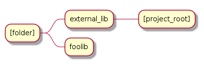

Hybrid#
Real world tests combining multiple compilers
Note
In the Hybrid examples we use the Args and Register module to abstract away Taskflow and CLI11 APIs. To see the lowlevel usage please see the lowlevel [compiler] tests.
Single Boilerplate#
We are only using a single Toolchain - Target pair
1int main(int argc, char ** argv) {
2 // Register your [toolchain.{name}]
3 // In this case it will be [toolchain.gcc]
4 ArgToolchain arg_gcc;
5
6 // Args module to get data from the command line or .toml file passed in through --config
7 Args::Init()
8 .AddToolchain("gcc", "Generic gcc toolchain", arg_gcc)
9 .Parse(argc, argv);
10
11 // Register module
12 Reg::Init();
13 Reg::Call(Args::Clean()).Func(clean_cb);
14
15 // TODO, Write your target builds here
16 // See examples below
17}
18
19static void clean_cb() {
20 env::log_info(EXE, fmt::format("Cleaning {}", env::get_project_build_dir()));
21 fs::remove_all(env::get_project_build_dir());
22}
1# Required parameters
2root_dir = "" # build executable meant to be invoked from the current directory
3build_dir = "_build" # Creates this directory relative to where you invoke your build executable
4
5# Optional parameters
6loglevel = "trace" # trace, debug, info, warning, critical
7clean = true # calls clean_cb if true, user specifies how their project must be cleaned
8
9# Toolchain
10# Valid configurations are
11# build = false, test = false
12# build = true, test = false
13# build = true, test = true
14[toolchain.gcc]
15build = true
16test = true
Single#
Compile a single source with a single GCC compiler.
1int main(int argc, char ** argv) {
2 // See Single Boilerplate
3
4 Toolchain_gcc gcc;
5 ExecutableTarget_gcc hello_world("hello_world", gcc, "");
6
7 // Select your builds and tests using the .toml files
8 Reg::Toolchain(arg_gcc.state)
9 .Func([&]() { gcc.Verify(); })
10 .Build(arg_gcc.state, hello_world_build_cb, hello_world)
11 .Test(arg_gcc.state, "{executable}", hello_world);
12
13 // Build and Test Target
14 Reg::Run();
15}
16
17static void hello_world_build_cb(BaseTarget &target) {
18 target.AddSource("main.cpp", "src");
19 target.Build();
20}
Multiple Boilerplate#
We are using multiple Toolchain - Target pairs
1int main(int argc, char ** argv) {
2 // Register your [toolchain.{name}]
3 // In this case it will be [toolchain.gcc] and [toolchain.msvc]
4 ArgToolchain arg_gcc;
5 ArgToolchain arg_msvc;
6
7 // Args module to get data from the command line or .toml file passed in through --config
8 Args::Init()
9 .AddToolchain("gcc", "Generic gcc toolchain", arg_gcc)
10 .AddToolchain("msvc", "Generic msvc toolchain", arg_msvc)
11 .Parse(argc, argv);
12 // NOTE, You can add more toolchains here as per your project requirement
13
14 // Register module
15 Reg::Init();
16 Reg::Call(Args::Clean()).Func(clean_cb);
17
18 // TODO, Write your target builds here
19 // See examples below
20}
21
22static void clean_cb() {
23 env::log_info(EXE, fmt::format("Cleaning {}", env::get_project_build_dir()));
24 fs::remove_all(env::get_project_build_dir());
25}
1# Required parameters
2root_dir = "" # build executable meant to be invoked from the current directory
3build_dir = "_build" # Creates this directory relative to where you invoke your build executable
4
5# Optional parameters
6loglevel = "trace" # trace, debug, info, warning, critical
7clean = true # calls clean_cb if true, user specifies how their project must be cleaned
8
9# Toolchain
10# Valid configurations are
11# build = false, test = false
12# build = true, test = false
13# build = true, test = true
14[toolchain.gcc]
15build = true
16test = true
17
18# If we are building on Windows make these true
19[toolchain.msvc]
20build = false
21test = false
Note
On Windows, make sure you install the Build Tools properly and invoke vcvarsall.bat amd64 or equivalent from the command line to activate your toolchain.
Simple#
Similar to lowlevel GCC Flags example for both the GCC and MSVC compiler
1int main(int argc, char ** argv) {
2 // See Multiple Boilerplate
3
4 Toolchain_gcc gcc;
5 ExecutableTarget_gcc g_cppflags("cppflags", gcc, "files");
6 ExecutableTarget_gcc g_cflags("cflags", gcc, "files");
7 // Select your builds and tests using the .toml files
8 Reg::Toolchain(arg_gcc.state)
9 .Func([&](){ gcc.Verify(); })
10 .Build(cppflags_build_cb, g_cppflags)
11 .Build(cflags_build_cb, g_cflags)
12 .Test("{executable}", g_cppflags)
13 .Test("{executable}", g_cflags);
14
15 Toolchain_msvc msvc;
16 ExecutableTarget_msvc m_cppflags("cppflags", msvc, "files");
17 ExecutableTarget_msvc m_cflags("cflags", msvc, "files");
18 Reg::Toolchain(arg_msvc.state)
19 .Func([&](){ msvc.Verify(); })
20 .Build(cppflags_build_cb, m_cppflags)
21 .Build(cflags_build_cb, m_cflags)
22 .Test("{executable}", m_cppflags)
23 .Test("{executable}", m_cflags);
24
25 // Build and Test target
26 Reg::Run();
27
28 return 0;
29}
30
31static void cppflags_build_cb(BaseTarget &cppflags) {
32 cppflags.AddSource("main.cpp", "src");
33 cppflags.AddSource("src/random.cpp");
34 cppflags.AddIncludeDir("include", true);
35
36 // Toolchain specific code goes here
37 switch (cppflags.GetToolchain().GetId()) {
38 case ToolchainId::Gcc: {
39 cppflags.AddPreprocessorFlag("-DRANDOM=1");
40 cppflags.AddCppCompileFlag("-Wall");
41 cppflags.AddCppCompileFlag("-Werror");
42 cppflags.AddLinkFlag("-lm");
43 break;
44 }
45 case ToolchainId::Msvc: {
46 cppflags.AddPreprocessorFlag("/DRANDOM=1");
47 cppflags.AddCppCompileFlag("/W4");
48 break;
49 }
50 default:
51 break;
52 }
53
54 cppflags.Build();
55}
56
57static void cflags_build_cb(BaseTarget &cflags) {
58 cflags.AddSource("main.c", "src");
59
60 // Toolchain specific code goes here
61 switch (cflags.GetToolchain().GetId()) {
62 case ToolchainId::Gcc: {
63 cflags.AddPreprocessorFlag("-DRANDOM=1");
64 cflags.AddCCompileFlag("-Wall");
65 cflags.AddCCompileFlag("-Werror");
66 cflags.AddLinkFlag("-lm");
67 break;
68 }
69 case ToolchainId::Msvc: {
70 cflags.AddPreprocessorFlag("/DRANDOM=1");
71 cflags.AddCCompileFlag("/W4");
72 break;
73 }
74 default:
75 break;
76 }
77
78 cflags.Build();
79}
Foolib#
For library developers
Scenario
Say suppose you are a library developer who has created an amazing Foo library. How would you easily specifiy your project build to be used by yourself and end users?
Solution: Create Header / Source segregations. For example. build.foo.h and build.foo.cpp
End users can now create their own build.[project].cpp file and compile build.foo.cpp along with their source and use appropriate APIs are provided by your files.
Depending on the complexity of your project the library developer can provide multiple APIs with different options that need to be selected at run time / compile time.
Header
1#pragma once
2
3#include "buildcc.h"
4
5void fooTarget(buildcc::BaseTarget &target, const fs::path &relative_path);
Source
1#include "build.foo.h"
2
3void fooTarget(buildcc::BaseTarget &target, const fs::path &relative_path) {
4 target.AddSource(relative_path / "src/foo.cpp");
5 target.AddIncludeDir(relative_path / "src", true);
6}
External Lib#
For end users consuming third party libraries
Scenario
User would like to use the third party library Foo in their codebase. The Foo library resides in a different directory as visualized below.

1#include "build.foo.h"
2
3int main(int argc, char ** argv) {
4 // See Multiple Boilerplate
5
6 // Build steps
7 Toolchain_gcc gcc;
8 Toolchain_msvc msvc;
9
10 ExecutableTarget_gcc g_foolib("foolib", gcc, TargetEnv("..."));
11 ExecutableTarget_msvc m_foolib("foolib", msvc, TargetEnv("...");
12
13 Reg::Toolchain(arg_gcc.state)
14 .Build(foolib_build_cb, g_foolib);
15
16 Reg::Toolchain(arg_msvc.state)
17 .Build(foolib_build_cb, m_foolib);
18
19 Reg::Run();
20}
21
22static void foolib_build_cb(BaseTarget &target) {
23 fooTarget(target, "../foolib");
24 target.AddSource("main.cpp");
25 target.Build();
26}
Custom Target#
For super customized targets and toolchains
1int main(int argc, char ** argv) {
2
3 ArgToolchain arg_gcc;
4 ArgToolchain arg_msvc;
5 ArgToolchain toolchain_clang_gnu;
6 ArgTarget target_clang_gnu;
7
8 Args::Init()
9 .AddToolchain("gcc", "Generic gcc toolchain", arg_gcc)
10 .AddToolchain("msvc", "Generic msvc toolchain", arg_msvc)
11 .AddToolchain("clang_gnu", "Clang GNU toolchain", toolchain_clang_gnu)
12 .AddTarget("clang_gnu", "Clang GNU target", target_clang_gnu)
13 .Parse(argc, argv);
14
15 // Additional boilerplate
16
17 // Supplied at compile time
18 Toolchain_gcc gcc;
19 Toolchain_msvc msvc;
20 // Get custom toolchain from the command line, supplied at run time
21 auto &clang = toolchain_clang_gnu;
22 clang.SetToolchainInfoFunc(GlobalToolchainInfo::Get(clang.id));
23
24 ExecutableTarget_gcc g_foolib("foolib", gcc, "");
25 ExecutableTarget_msvc m_foolib("foolib", msvc, "");
26 // Get compile_command and link_command from the command line
27 Target_custom c_foolib("CFoolib.exe", TargetType::Executable, clang, "", target_clang_gnu.GetTargetConfig());
28
29 Reg::Toolchain(arg_gcc.state)
30 .Build(foolib_build_cb, g_foolib);
31 Reg::Toolchain(arg_msvc.state)
32 .Build(foolib_build_cb, m_foolib);
33 Reg::Toolchain(toolchain_clang_gnu.state)
34 .Build( foolib_build_cb, c_foolib);
35
36 // Build targets
37 Reg::Run();
38}
39
40static void foolib_build_cb(BaseTarget &target) {
41 target.AddSource("src/foo.cpp");
42 target.AddIncludeDir("src", true);
43 target.AddSource("main.cpp");
44 target.Build();
45}
1# See Multiple boilerplate .toml file
2
3# Custom toolchain added here
4[toolchain.clang_gnu]
5build = true
6test = true
7
8# Custom toolchain added here, supplied during runtime
9id = "Clang"
10name = "clang_gnu"
11asm_compiler = "llvm-as"
12c_compiler = "clang"
13cpp_compiler = "clang++"
14archiver = "llvm-ar"
15linker = "ld"
16
17# Custom target added here
18[target.clang_gnu]
19compile_command = "{compiler} {preprocessor_flags} {include_dirs} {compile_flags} -o {output} -c {input}"
20link_command = "{cpp_compiler} {link_flags} {compiled_sources} -o {output} {lib_dirs} {lib_deps}"
PrecompileHeader#
Precompile header usage with GCC and MSVC compilers
1// Modified Lowlevel GCC Flags example for PCH
2
3static void cppflags_build_cb(BaseTarget &cppflags) {
4cppflags.AddSource("main.cpp", "src");
5cppflags.AddSource("random.cpp", "src");
6cppflags.AddIncludeDir("include", true);
7
8cppflags.AddPch("pch/pch_cpp.h");
9cppflags.AddPch("pch/pch_c.h");
10cppflags.AddIncludeDir("pch", true);
11
12// Toolchain specific code goes here
13switch (cppflags.GetToolchain().GetId()) {
14case ToolchainId::Gcc: {
15 cppflags.AddPreprocessorFlag("-DRANDOM=1");
16 cppflags.AddCppCompileFlag("-Wall");
17 cppflags.AddCppCompileFlag("-Werror");
18 cppflags.AddLinkFlag("-lm");
19 break;
20}
21case ToolchainId::Msvc: {
22 cppflags.AddPreprocessorFlag("/DRANDOM=1");
23 cppflags.AddCppCompileFlag("/W4");
24 break;
25}
26default:
27 break;
28}
29
30cppflags.Build();
31}
32
33static void cflags_build_cb(BaseTarget &cflags) {
34cflags.AddSource("main.c", "src");
35
36cflags.AddPch("pch/pch_c.h");
37cflags.AddIncludeDir("pch", false);
38cflags.AddHeader("pch/pch_c.h");
39
40// Toolchain specific code goes here
41switch (cflags.GetToolchain().GetId()) {
42case ToolchainId::Gcc: {
43 cflags.AddPreprocessorFlag("-DRANDOM=1");
44 cflags.AddCCompileFlag("-Wall");
45 cflags.AddCCompileFlag("-Werror");
46 cflags.AddLinkFlag("-lm");
47 break;
48}
49case ToolchainId::Msvc: {
50 cflags.AddPreprocessorFlag("/DRANDOM=1");
51 cflags.AddCCompileFlag("/W4");
52 break;
53}
54default:
55 break;
56}
57
58cflags.Build();
59}
Dependency Chaining#
Chain Generators and Targets using the Register module
1int main(int argc, char ** argv) {
2 // See Multiple Boilerplate
3
4 Toolchain_gcc gcc;
5 Toolchain_msvc msvc;
6
7 BaseGenerator cpp_generator("cpp_generator", "");
8 Reg::Call().Build(cpp_generator_cb, cpp_generator);
9
10 ExecutableTarget_gcc g_cpptarget("cpptarget", gcc, "");
11 Reg::Toolchain(arg_gcc.state)
12 .Func([&](){ gcc.Verify(); })
13 .Build(cpp_target_cb, g_cpptarget, cpp_generator)
14 .Dep(g_cpptarget, cpp_generator);
15
16 ExecutableTarget_msvc m_cpptarget("cpptarget", msvc, "");
17 Reg::Toolchain(arg_msvc.state)
18 .Func([&](){ msvc.Verify(); })
19 .Build(cpp_target_cb, m_cpptarget, cpp_generator)
20 .Dep(m_cpptarget, cpp_generator);
21}
22
23// Use a python generator to create main.cpp
24static void cpp_generator_cb(BaseGenerator &generator) {
25 generator.AddOutput("{gen_build_dir}/main.cpp", "main_cpp");
26 generator.AddCommand("python3 {gen_root_dir}/python/gen.py --source_type cpp "
27 "--destination {main_cpp}");
28 generator.Build();
29}
30
31// Use main.cpp generated by the python script to compile your target
32static void cpp_target_cb(BaseTarget &cpptarget,
33 const BaseGenerator &cpp_generator) {
34 const fs::path main_cpp =
35 fs::path(cpp_generator.GetValueByIdentifier("main_cpp"))
36 .lexically_relative(env::get_project_root_dir());
37 cpptarget.AddSource(main_cpp);
38 cpptarget.Build();
39}
Target Info#
Target Info usage to store Target specific information
Example usage for Header Only targets, however it can store information for all Target inputs
Common information used between multiple targets can be stored into a TargetInfo instance
1int main(int argc, char ** argv) {
2 // See Multiple boilerplate
3
4 Toolchain_gcc gcc;
5 Toolchain_msvc msvc;
6
7 // TargetInfo
8 TargetInfo g_genericadd_ho(gcc, "files");
9 ExecutableTarget_gcc g_genericadd1("generic_add_1", gcc, "files");
10 Reg::Toolchain(arg_gcc.state)
11 .Func(genericadd_ho_cb, g_genericadd_ho)
12 .Build(genericadd1_build_cb, g_genericadd1, g_genericadd_ho);
13
14 TargetInfo m_genericadd_ho(msvc, "files");
15 ExecutableTarget_msvc m_genericadd1("generic_add_1", msvc, "files");
16 Reg::Toolchain(arg_msvc.state)
17 .Func(genericadd_ho_cb, m_genericadd_ho)
18 .Build(genericadd1_build_cb, m_genericadd1, m_genericadd_ho);
19}
20
21// HO library contains include dirs and header files which are copied into executable target
22static void genericadd1_build_cb(BaseTarget &genericadd,
23 const TargetInfo &genericadd_ho) {
24 genericadd.AddSource("src/main1.cpp");
25 genericadd.Copy(genericadd_ho, {
26 SyncOption::IncludeDirs,
27 SyncOption::HeaderFiles,
28 });
29 genericadd.Build();
30}